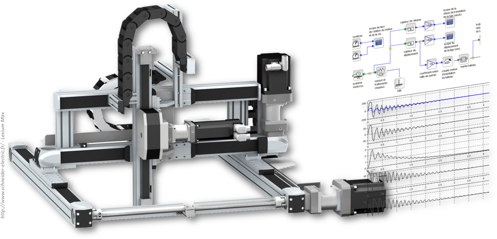

Cycle 1 : Modéliser le comportement linéaire et non linéaire des systèmes

Révisions de PCSI
| Fiche | Chapitre 1 : Définitions préliminaires et détermination des performances | GitHub |
| Fiche | Chapitre 2 : Modéliser les systèmes asservis - Transformée de Laplace | GitHub |
| Fiche | Chapitre 3 : Modélisation par fonction de transert et schéma-blocs | GitHub |
| Fiche | Chapitre 4 : Modélisation des systèmes du premier et du deuxième ordre - Domaine temporel | GitHub |
| Fiche | Chapitre 5 : Modélisation des systèmes linéaires - Domaine fréquentiel | GitHub |
PSI*
| Cours | Chapitre 1 : Modélisation multiphysique | GitHub |
| Item Two | Vis ac commodo adipiscing arcu aliquet. | 19.99 |
| Item Three | Morbi faucibus arcu accumsan lorem. | 29.99 |
| Item Four | Vitae integer tempus condimentum. | 19.99 |
| Item Five | Ante turpis integer aliquet porttitor. | 29.99 |
| 100.00 | ||